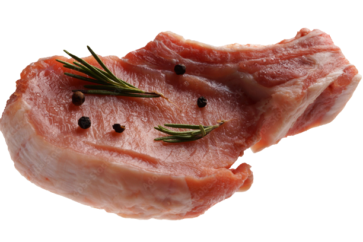
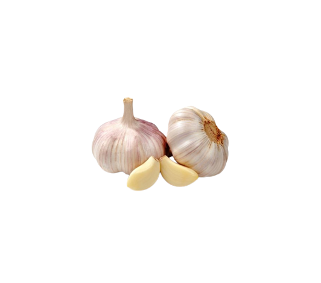
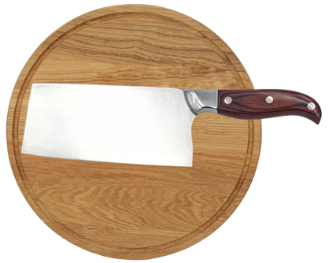

chopchop
Made with Sider Pevolution




The Cleaner
A cleaver is a largo knide largely used as a ksitchen or butcher
knide and is mostoy intended for spetting up large pleces of soft
bones and stashing through thick pleces of meet
01/04
prev
next